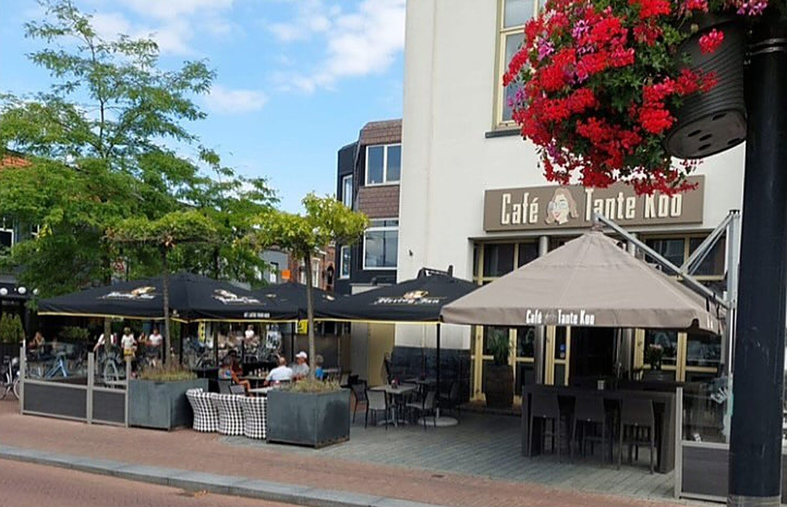
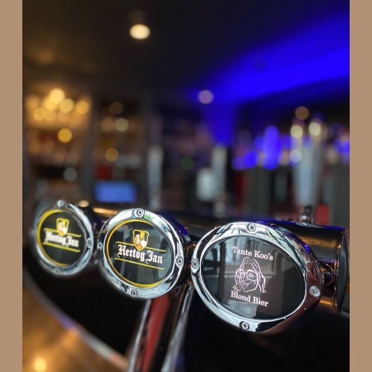
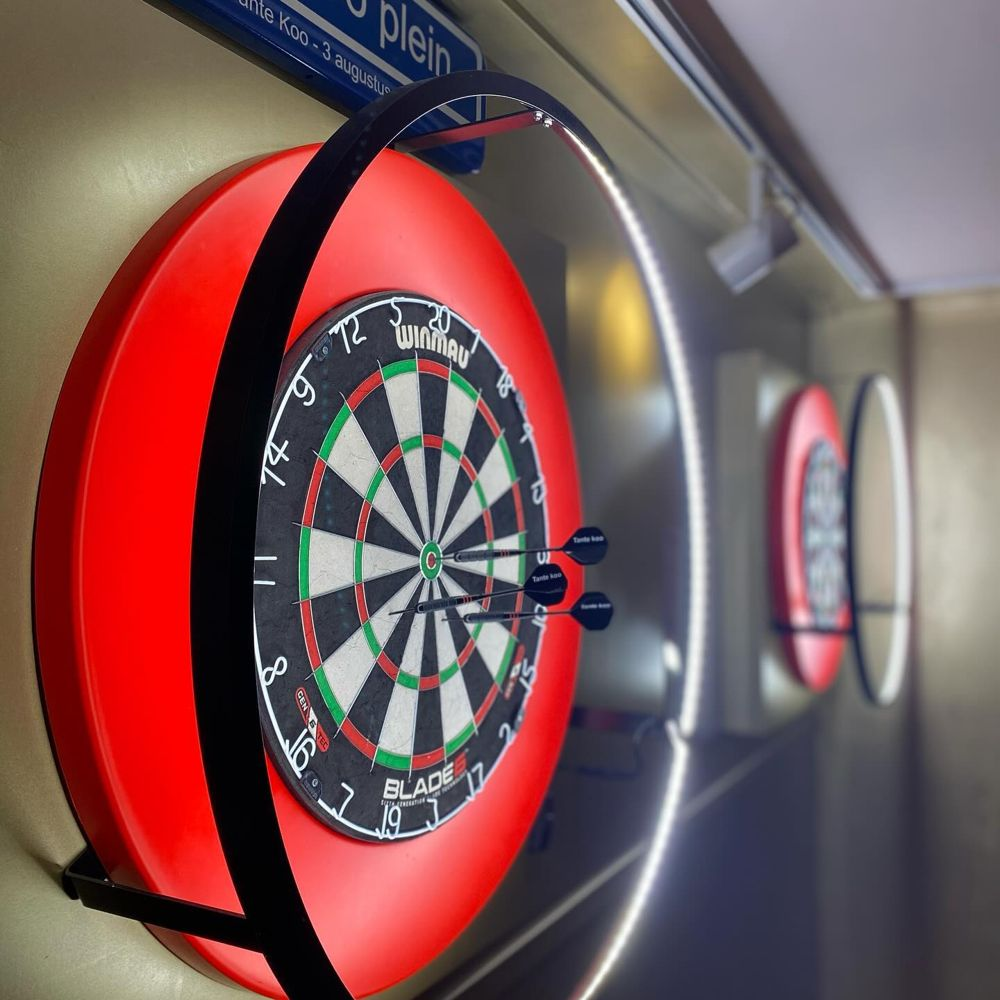
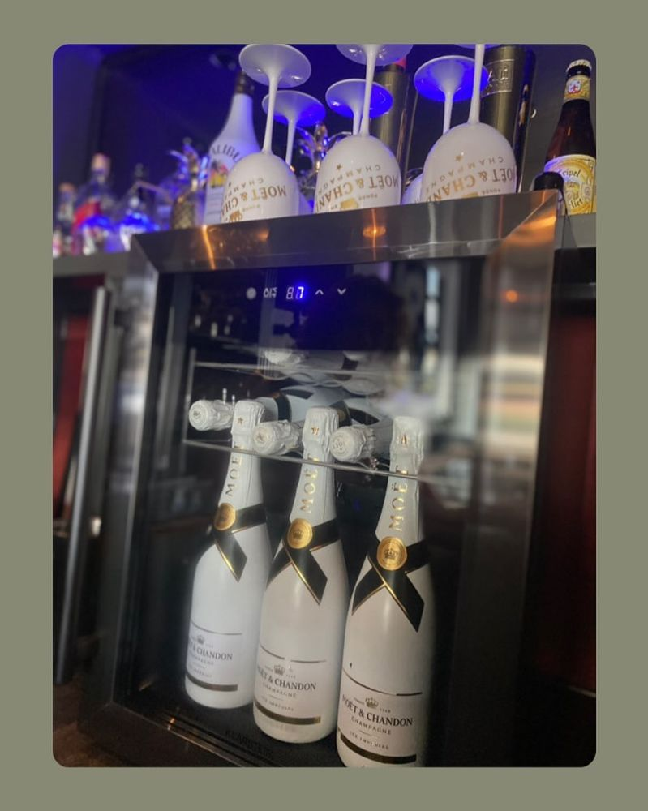
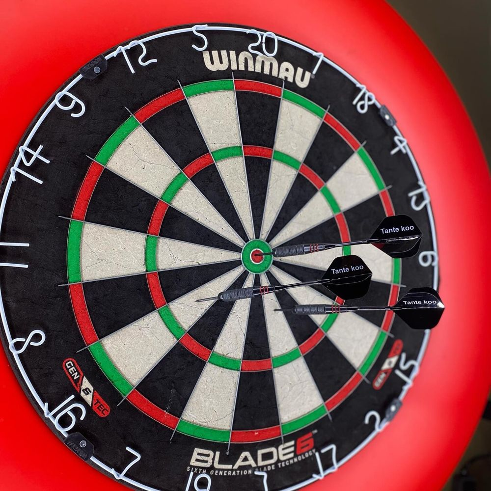

Gezellig borrelen aan het Heereplein
Ons eigen Tante Koo's Blond op de tap, darten op de bovenverdieping en live artiesten. Van woensdag tot en met zaterdag ben je welkom.
Kom gezellig een drankje doen
Op het terras als het weer het toelaat, binnen aan de bar of boven bij de dartborden.

Ons eigen biertje
Op de tap: Hertog Jan en ons eigen Tante Koo's Blond Bier.

Darten
Boven in het café kun je darten. Geen pijlen bij je? Die heb je bij ons te leen achter de bar.

Moët Ice
Bij lekker weer hoort een koud drankje, zoals onze Moët Ice.
Feesten en partijen
Iets te vieren? Wij zijn te boeken voor feesten en partijen, tot maximaal 100 personen. Stuur ons een bericht of bel, dan bespreken we samen de mogelijkheden.
- Tot 100 personen
- Midden in Raamsdonksveer
- Winter-BBQ op aanvraag
- Darten voor je gasten
Vraag naar de mogelijkheden
Vertel ons wat je wilt vieren, wanneer en met hoeveel mensen. Dan hoor je snel van ons.

Het café aan het plein
Café Tante Koo zit aan het Heereplein in Raamsdonksveer, met een groot terras aan het plein. Binnen aan de bar, boven bij de dartborden en bij live artiesten. BN DeStem kwam ook al langs voor een artikel over het café.
Ook de voetballers van RFC voelen zich hier thuis.
"Verder zijn we bij Tante Koo ook altijd welkom voor een borrel wanneer de kantine sluit."
RFC, op InstagramKom langs of stuur een bericht
Een feest boeken of een vraag? Stuur een WhatsApp of bel ons.
Café Tante Koo
Je vindt ons aan het Heereplein in Raamsdonksveer.